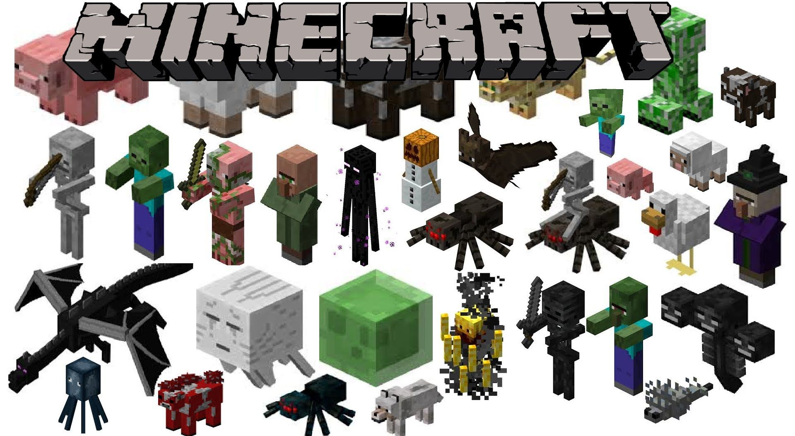
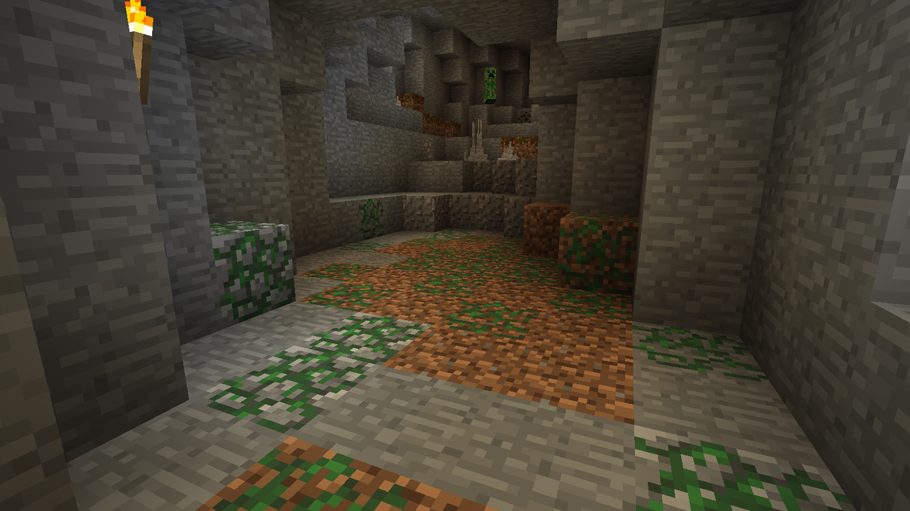

sab
Земля на карте генерируется в изобилии: верхний слой (размером в 3—4 блока) между дёрном или снегом и камнем практически полностью состоит из земли. Более того, скопления земли можно найти в подземельях на всех высотах и на дне глубоких водоёмов. крафт Крафт Так как гравий является возобновляемым ресурсом с версии 1.16, то каменистую землю можно создавать бесконечно, позже вспахивая её с помощью мотыги и тем самым создавая обычную землю. После чего процесс крафта можно повторить
  Скам
Скам